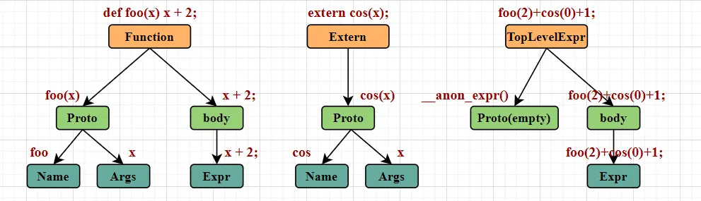
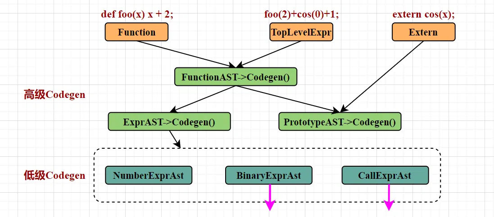

# 前言
本篇是使用 llvm 编译自定义语言的第二篇。前一篇【编译器】使用 llvm 编译自定义语言【1】文章自顶向下介绍了抽象语法树 AST 的构建过程，本篇接续上一篇，介绍将抽象语法树 AST 转化为 llvm IR 的过程。所使用代码例子来自 LLVM 官方教程 My First Language Frontend with LLVM Tutorial。
代码请于 My First Language Frontend with LLVM Tutorial 下载。本篇介绍无法代替官方教程，感兴趣请参考 My First Language Frontend with LLVM Tutorial。
作为初学者，错误在所难免，还望不吝赐教。
# LLVM IR
将抽象语法树 AST 转换为 LLVM IR 之前，初始化了以下 LLVM 提供的类。先简单了解一下这些类。
static std::unique_ptr<LLVMContext> TheContext; | |
static std::unique_ptr<Module> TheModule; | |
static std::unique_ptr<IRBuilder<>> Builder; | |
static std::map<std::string, Value *> NamedValues; | |
static std::unique_ptr<KaleidoscopeJIT> TheJIT; | |
static std::unique_ptr<FunctionPassManager> TheFPM; | |
static std::unique_ptr<LoopAnalysisManager> TheLAM; | |
static std::unique_ptr<FunctionAnalysisManager> TheFAM; | |
static std::unique_ptr<CGSCCAnalysisManager> TheCGAM; | |
static std::unique_ptr<ModuleAnalysisManager> TheMAM; | |
static std::unique_ptr<PassInstrumentationCallbacks> ThePIC; | |
static std::unique_ptr<StandardInstrumentations> TheSI; | |
static std::map<std::string, std::unique_ptr<PrototypeAST>> FunctionProtos; |
1. LLVMContext 是 LLVM 中最基础的类之一，它代表了一个 LLVM 的上下文环境。在 LLVM 里，所有的核心数据结构（像 Module 、 Function 、 BasicBlock 等）都和一个特定的 LLVMContext 相关联。 LLVMContext 负责管理内存分配、常量池以及一些全局的元数据。
2. Module 依赖于 LLVMContext ，它是一个编译单元的表示，是包含多个函数、全局变量和类型定义的容器。在自定义语言编译过程中，生成的中间表示（IR）代码都会被添加到 Module 中。
3. IRBuilder 是一个用于构建 LLVM 中间表示（IR）代码的辅助类。借助 IRBuilder ，能够方便地创建各种 LLVM 指令，像算术运算、函数调用、控制流语句等。
4. KaleidoscopeJIT 是 LLVM 官方为简单的万花筒自定义语言设计的一个即时编译器（JIT），用于将生成的 LLVM IR 代码即时编译成机器码并执行。代码位于 llvm 工程： llvm-src/examples/Kaleidoscope/include/KaleidoscopeJIT.h
5. FunctionPassManager 是一个用于管理和执行函数级别的优化和转换的类。在 LLVM 里，优化和转换操作是通过一系列的 “Pass” 来实现的。 FunctionPassManager 可以将多个 Pass 组合起来，对函数进行一系列的优化，例如常量折叠、死代码消除等。
6. NamedValues 和 FunctionProtos 两个 Map 是自定义的，用于暂存变量、原型的容器。
7. 剩下的 LoopAnalysisManager 等都是用于分析优化的管理器。
# Codegen 顶级 Item
我们再看一下上一篇中的例子。例子中想要构建的三种顶级 Item：函数 Function、外部函数 Extern、顶级表达式 TopLevelExpr。

现在的任务就是将这三种 AST 结构转换为 LLVM IR。
为了展示顶级 Item 的 Codegen 调用过程，我将调用过程划分为两个个层级，分别是高级 Codegen 和低级 Codegen，如图所示：

根据图先来简单分析一下：函数 Function 这类顶级 Item 自然是调用 FunctionAST->Codegen 方法。而顶级表达式 TopLevelExpr 已经构建成一个匿名 Function，所以它和函数 Function 的结构是相同的，只是 Proto 参数为空，所以顶级表达式 TopLevelExpr 也调用 FunctionAST->Codegen 方法。
FunctionAST->Codegen 在构建过程中，会调用 PrototypeAST->Codegen 和 ExprAST->Codegen 方法，非常好理解，因为 Function 就包含原型和表达式两个结构。
外部函数 Extern 只有 Proto 结构，所以调用的是 PrototypeAST->Codegen 方法。
高级 Codegen 中， FunctionAST->Codegen 只是在调用另外两个， PrototypeAST->Codegen 非常简单， ExprAST->Codegen 实际上是在递归地调用低级 Codegen，所以相对复杂。
# Function
Function 的 Codegen 代码 (只保留了有助于理解的关键代码)：
Function *FunctionAST::codegen() { | |
// Transfer ownership of the prototype to the FunctionProtos map, but keep a | |
// reference to it for use below. | |
auto &P = *Proto; | |
FunctionProtos[Proto->getName()] = std::move(Proto); | |
Function *TheFunction = getFunction(P.getName()); // 调用 PrototypeAST->Codegen () 获得函数的函数原型 | |
if (Value *RetVal = Body->codegen()) { // 调用 ExprAst->Codegen () 获得表达式 IR | |
// Finish off the function. | |
Builder->CreateRet(RetVal); // 将表达式 IR RetVal 作为函数的返回值 | |
return TheFunction; | |
} | |
return nullptr; | |
} |
FunctionAST->Codegen 调用 Prototype->Codegen ，获得一个配置了原型的 LLVM Function 类。然后调用 Body->codegen() 将表达式转换为 llvm IR Value 类 RetVal 。最后将 RetVal 设置为 Function 的返回值。
# Prototype
Prototype 的 Codegen 代码：
Function *PrototypeAST::codegen() { | |
// Make the function type: double(double,double) etc. | |
std::vector<Type *> Doubles(Args.size(), Type::getDoubleTy(*TheContext)); // 设置原型的参数数量及类型，在万花筒语言中所有类型都是 Double | |
FunctionType *FT = | |
FunctionType::get(Type::getDoubleTy(*TheContext), Doubles, false); // 配置返回类型 | |
Function *F = | |
Function::Create(FT, Function::ExternalLinkage, Name, TheModule.get()); // 创建具有上述原型特征的函数 `Function` | |
// Set names for all arguments. | |
unsigned Idx = 0; | |
for (auto &Arg : F->args()) | |
Arg.setName(Args[Idx++]); // 设置每个参数的名字（用于构建表达式的时候识别输入参数） | |
return F; | |
} |
PrototypeAST->Codegen 内容很简单，例如 foo(x) 这么一个原型，上述代码的过程就是 1. 声明一个参数 Double 2. 构建有一个 Double 返回值，并且名字为 foo 的函数 3. 设置参数的名字为 x
最后是 ExprAST->Codegen ，将表达式转换为 llvm IR，相对复杂，由下一节讲解。
# Codegen 表达式
前述基本表达式有四种：数字表达式 NumberExpr 、二值表达式 BinaryExpr 、变量表达式 VariableExpr 、调用表达式 CallExpr 。所有的表达式都继承基类 ExprAST ，并重写了 Codegen() 函数。所以 ExprAST->Codegen 调用的是各个基本表达式的 Codegen() 函数。
# NumberExpr
Value *NumberExprAST::codegen() { | |
return ConstantFP::get(*TheContext, APFloat(Val)); | |
} |
NumberExprAST->codegen() 将本类的 Double 成员 Val 转化为 llvm IR 浮点值。
# BinaryExpr
Value *BinaryExprAST::codegen() { | |
Value *L = LHS->codegen(); // 递归地构建左表达式 | |
Value *R = RHS->codegen(); // 递归地构建右表达式 | |
if (!L || !R) | |
return nullptr; | |
switch (Op) { // 然后构建 OP 组合为二值表达式。 | |
case '+': | |
return Builder->CreateFAdd(L, R, "addtmp"); | |
case '-': | |
return Builder->CreateFSub(L, R, "subtmp"); | |
case '*': | |
return Builder->CreateFMul(L, R, "multmp"); | |
case '<': | |
L = Builder->CreateFCmpULT(L, R, "cmptmp"); | |
// Convert bool 0/1 to double 0.0 or 1.0 | |
return Builder->CreateUIToFP(L, Type::getDoubleTy(*TheContext), "booltmp"); | |
default: | |
return LogErrorV("invalid binary operator"); | |
} | |
} |
BinaryExprAST 有三个成员，分别是左表达式 LHS 和右表达式 RHS ，以及算子 OP 。左右表达式通过调用 ExprAST->codegen() 递归地实现构建过程。然后和 OP 一起组成二值表达式。
# CallExpr
Value *CallExprAST::codegen() { | |
// Look up the name in the global module table. | |
Function *CalleeF = getFunction(Callee); // 根据调用名称寻找已经定义的函数 | |
if (!CalleeF) | |
return LogErrorV("Unknown function referenced"); | |
// If argument mismatch error. | |
if (CalleeF->arg_size() != Args.size()) // 检查参数数量是否匹配 | |
return LogErrorV("Incorrect # arguments passed"); | |
std::vector<Value *> ArgsV; | |
for (unsigned i = 0, e = Args.size(); i != e; ++i) { | |
ArgsV.push_back(Args[i]->codegen()); // 每个参数都是一个表达式，需要递归地构建 | |
if (!ArgsV.back()) | |
return nullptr; | |
} | |
return Builder->CreateCall(CalleeF, ArgsV, "calltmp"); // 组合起来 | |
} |
CallAST 有两个成员，分别是调用名称 Callee 和参数 Args 。过程是 1. 根据调用名称寻找已经定义的函数。 2. 每个参数都是一个表达式，调用 ExprAST->codegen() 递归地实现构建过程，每个参数调用一次。 3. 组合起来，构建结束。
讲到这里，可能会有细心的读者发现：上一章讲的四个基本表达式：数字表达式 NumberExpr 、二值表达式 BinaryExpr 、调用表达式 CallExpr ，对应的 Codegen 分别有三个。那个变量表达式 VariableExpr 的 Codegen () 去哪儿了？
Value *VariableExprAST::codegen() { | |
// Look this variable up in the function. | |
Value *V = NamedValues[Name]; // 根据名字，将 Map 中存储的变量取出来。 | |
if (!V) | |
return LogErrorV("Unknown variable name"); | |
return V; | |
} |
在这里，但是这里没有构建任何 llvm IR。
原因是在将 表达式转为 llvm IR 的过程中，没有任何新的变量需要创建，所需的变量在转换 Prototype 的时候就已经完成了。
例如 foo(x) x+2; 这样一个函数，变量 x 在转换 foo(x) 这个原型的时候就已经创建好了，所以在转换 x+2 表达式的时候，只需要在已经创建好的 NamedValues Map 中把它取出来。
# 后记
本博客目前以及可预期的将来都不会支持评论功能。各位大侠如若有指教和问题，可以在我的 github 项目 或随便一个项目下提出 issue，并指明哪一篇博客，我看到一定及时回复！